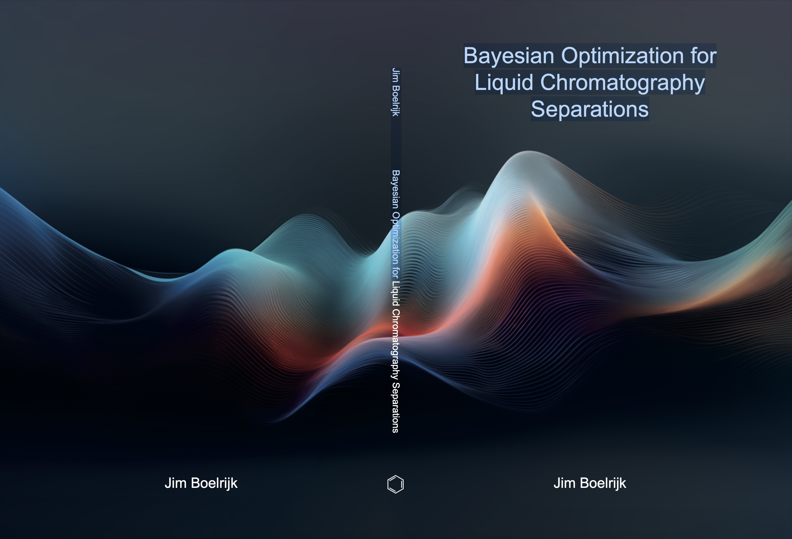

8 November 2024
PhD defence of Jim Boelrijk

Jim Boelrijk will defend his thesis Bayesian optimization for liquid chromatography separations. Promotors: Dr. B. Ensing and Prof. dr. A.G. Hoekstra; co-promotors and daily supervisors: Dr. P.D. Forré and Dr. B.W.J. Pirok.
PhD thesis summary
The increasing complexity of newly developed drugs requires increasingly sophisticated analytical tools. Compared to the synthesis and analysis of a small molecule drug such as paracetamol, the pharmaceutical industry today synthesizes highly specific drugs ranging from simple peptides to complete monoclonal antibodies. It is essential to qualify and quantify minor impurities in the synthesis.

Meanwhile, liquid chromatography (LC), a powerful separation technique and the workhorse for this type of analysis, is being expanded with new variations, hyphenations, and settings to respond to these needs. While successful, this inevitably leads to more adjustable parameters, requiring considerable time, resources, and expertise to optimize effectively, hindering the breakthrough of powerful techniques such as two-dimensional LC (2D-LC).
In this thesis, we investigate and develop sample efficient optimization techniques, which find optima in as few experiments as possible, that can automatically optimize LC methods and can make advanced techniques more accessible.
In Part 1, we focus on the techniques of retention modeling and Bayesian optimization to optimize separations in LC and 2D-LC. We first study these techniques in separate use cases. We will see that both techniques are powerful on their own but have their strengths and weaknesses. Therefore, we focus on combining the strengths of both methods in the last chapter Part 1. Part 2 focusses on scaling up multi-objective optimization to a larger number of objectives by approximating the hypervolume indicator, a common objective for assessing the quality of a Pareto front, with equivariant deep learning. Lastly, we focus on the task of predicting retention indices (that is, normalized retention times) directly from mass spectrometry data using machine learning, potentially aiding in tracking chemicals of emerging concern.
NEWS
news